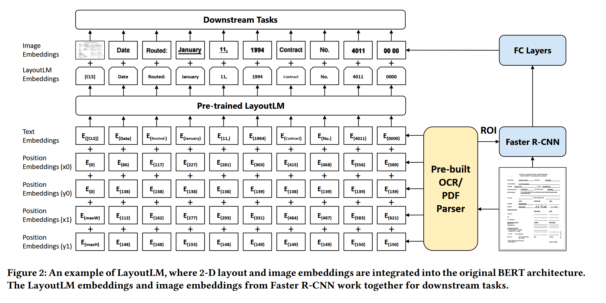
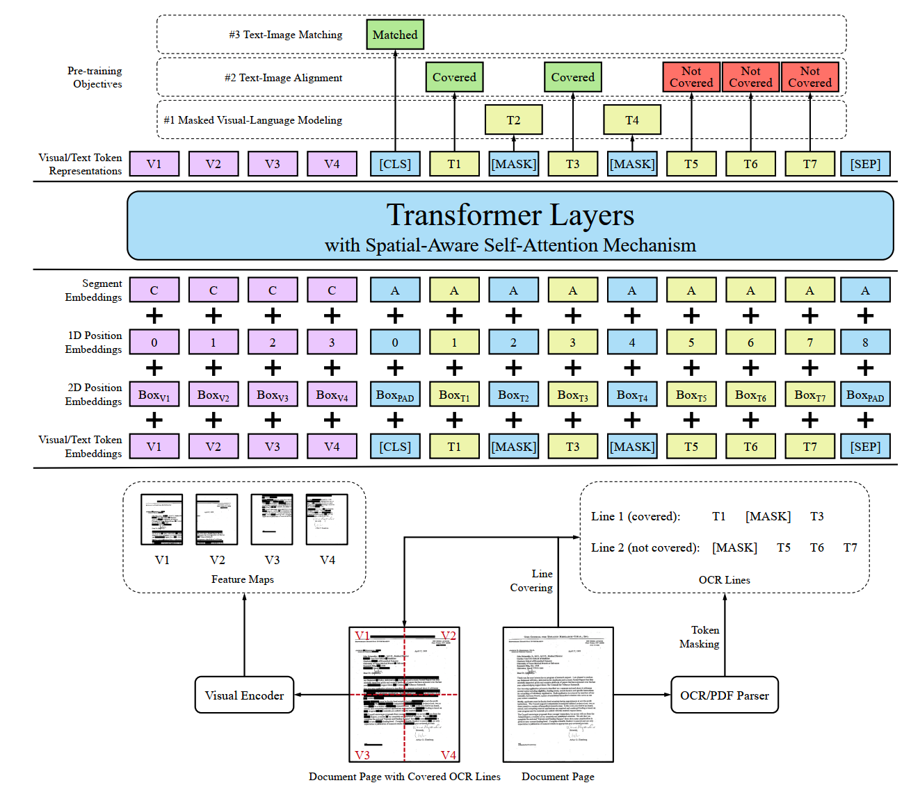
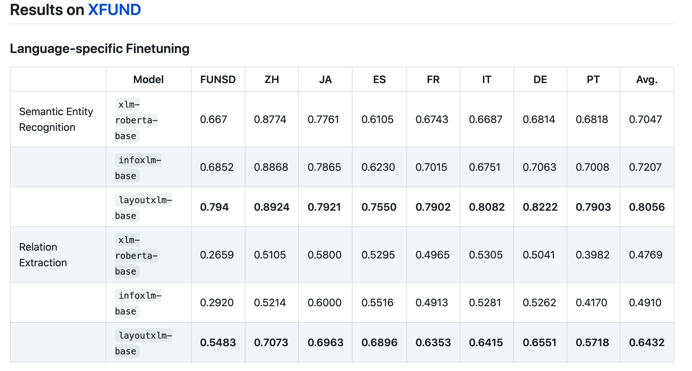

LayoutLM系列¶
简介¶
- LayoutLM系列是一种多模态的版面分析工作，从下游命名实体抽取任务来看，相比基于BERT的NER任务，LayoutLM 在输入端会额外编码图像上下文信息， 图像文本位置信息，从预训练语言模型的角度，LayoutLM提出了Text-Image Alignment任务，Text-Image Matching任务。
LayoutLM¶
- Pretrain
- 输入
- text embedding
- position x0 embedding
- position y0 embedding
- position x1 embedding
- position y1 embedding（相当于text position embedding）
- 每个位置输入一个英文单词，以及该单词在图片上的位置编码（分别用矩形左上角的点【x0,y0】，右下角的点【x1,y1】进行位置编码）
-
模型结构
- 模型结构如下： 
-
task
- masked visual-language model
- 随机mask一些tokens,但保留位置信息，模型预测被mask的token
- multi-label document classfication
- 文档图片的多标签分类任务
-
Finetune
-
dataset
- FUNSD(199张图片，标注了位置，文字，以及实体类型)
-
下游任务
- 命名实体识别
- 输入
- image embedding（注意：图片信息只在finetune阶段引入）
- 图片中每个box的image embedding(RoI)
- bert encode embedding
LayoutLMV2¶
- 特点
- 除了text embedding，还引入了2D-position embedding和image embedding，利用transformer结构，融合图像信息和文本信息
- 相比LayoutLM,LayoutLMv2在预训练阶段引入图片信息，可以让transformer结构更加充分学习文本和图像的跨模态信息
-
Pretrain
-
输入
- visual embedding
- resnet编码后的image embedding, [w,h,512]
- Layout embeding
- 版面布局信息，即文本框，以及文本区域的2D位置信息，用6个维度表示:\((x_1,y_1,x_2,y_2,w,h)\)
- text embedding
- 2D position embedding（图片及文本框的位置编码，用四个x维的向量叠加）
- 图片中的位置转one hot再线性变换成指定维度
- visiual embedding部分的2D position通过感受野映射回原始图像的坐标上
- 1D position embedding(类似于bert的位置编码)
- segment embedding
- Spatial-aware self-attention mechanism
- Self-attention输入的包括visual-text embedding, 2D-position embedding,1D-position embedding,segment-embedding
- 原始的transformer结构，使用text-embedding+position embedding计算注意力权重，表示query和key的关系
- layoutlmv2中使用偏置项模拟了语义相对位置（1d）和空间相对位置(2d)，不同与attention-head，它会在所有的编码层共享
- \(\alpha'_{ij}=\alpha_{ij}+b^{1D}_{j-i}+b^{2D_x}_{x_j-x_i}+b^{2D_y}_{y_j-y_i}\)
- 原因：attention计算的过程加入了两个不可知的线性变换后，会丢失相对位置关系，因此，可以主动加上相对位置关系
- 模型结构
- 模型结构如下： 
- task
- Text-image matching文本图片匹配是否匹配的任务，类似于bert中两条文本是否是上下句
- text-image alignment，预测文本（单词）是否被覆盖
- masked visual-languange model,预测被mask掉的文字
- visual embedding不止4个，由feature map的尺寸决定（W*H个），图片分类finetune用[CLS]
LayoutXLM¶
- 特点
-
多模态**多语言**的预训练模型
-
Pretrain
-
model
- XLM模型（提出并验证词表的分割方法对下游任务的影响）
-
输入（与LayoutLMv2一致）
- segment embedding(区分图片和文本,bert中用于区分上下句)
- 1D position embedding(确定文字位置编码以及图片区域位置)
- 2D position embedding(图片位置【分割后的文档位置】以及文本框位置)
- visual/text token embedding(图片以及文本编码)
def _cal_spatial_position_embeddings(self, bbox): try: left_position_embeddings = self.x_position_embeddings(bbox[:, :, 0]) upper_position_embeddings = self.y_position_embeddings(bbox[:, :, 1]) right_position_embeddings = self.x_position_embeddings(bbox[:, :, 2]) lower_position_embeddings = self.y_position_embeddings(bbox[:, :, 3]) except IndexError as e: raise IndexError("The :obj:`bbox`coordinate values should be within 0-1000 range.") h_position_embeddings = self.h_position_embeddings(bbox[:, :, 3] - bbox[:, :, 1]) w_position_embeddings = self.w_position_embeddings(bbox[:, :, 2] - bbox[:, :, 0]) spatial_position_embeddings = torch.cat( [ left_position_embeddings, upper_position_embeddings, right_position_embeddings, lower_position_embeddings, h_position_embeddings, w_position_embeddings, ], dim=-1, ) return spatial_position_embeddings - 疑惑：（x1,y1,x2,y2,w,h），为什么要引入w,h?单纯的增加特征？
-
task
- Text-image matching文本图片匹配是否匹配的任务，类似于bert中两条文本是否是上下句
- text-image alignment，预测文本（单词）是否被覆盖
- masked visual-languange model,预测被mask掉的文字
-
Finetune
-
dataset
- XFUN(7种语言，1393张数据)
-
下游任务
-
语义实体识别
- BIO标签
- 检测识别获取文本框的位置，相比其他pipeline方法（检测+识别+NER），额外利用了文本位置信息,当前方法并不是一个end2end的方法。
-
关系抽取
- 获取(head,tail)关系对，做分类任务
- 试验结果 
- 从中文试验结果来看，增加文本位置信息，可以小幅度提高测试集的准确率
-
注¶
- XLM：英文单词的切割方式会影响预训练语言模型在finetune时的精度。
- 暂时不可用，没有开源预训练语言模型，2021.07.07,LayoutLMV2可用
- 数据通过解析PDF得到,预训练数据30 million(XFUN,benchmark中包含1393张表单数据，共七种语言，每种语言199张全文标注)
思考总结¶
-
基于transformer的多模态预训练模型，在文字的基础上融入图像，文本框位置等信息，进行token预测、字符是否被mask、图像文字知否匹配的预训练任务。
-
另外，百度近期也有一个类似的工作:StrucText
表格识别¶